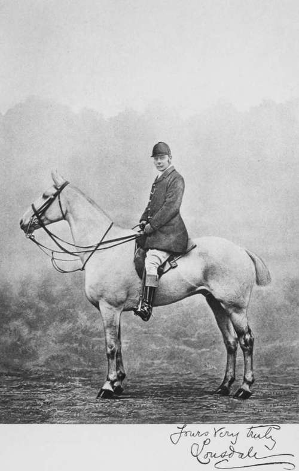
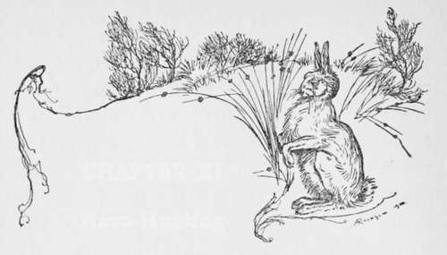

The Riding. Part 3
Description
This section is from the book "Hunting: A Manual of Fox, Hare, Stag & Otter Hunting", by J. Otho Paget. Also available from Amazon: Hunting: A Manual of Fox, Hare, Stag & Otter Hunting.
The Riding. Part 3
You may look on a horse as a steel spring from his nose to his hind feet. When extended to his highest speed, the steel straightens out at every stride to its full length, and at that moment—when hind feet and nose are the farthest apart—he is quite unprepared to negotiate an unlooked-for contingency. Bend the steel, and you get a power and reserve of force which will be ready at any moment to shoot you over the highest hedge. By bending the steel, I mean making the horse arch his neck, which at the same time obliges him to bring his hind legs beneath him. Therefore in jumping you may make the horse bend his neck, but as he raises himself on his hind legs in the act of springing from the ground, you should let his head go, as, unless he can stretch his neck fully out, he cannot exert the whole power of his hind quarters. The exact moment of doing this is known only to a horseman with good hands and considerable experience. These are niceties in the art of equitation which the beginner cannot expect to understand, but that is no reason he should not try to acquire them in time.
The best pace to ride at a fence, I think, led me into this discussion, and, as I have said, I consider the canter gives a horse the opportunity of putting forth his greatest strength with least exertion to himself. If you want to make up ground, gallop as fast as you like over the open, but always try and steady your horse at a fence. When you see a rider sticking the spurs in and hurrying on in the last fifty yards, you will notice his horse is almost certain to jump the fence badly. There is much to be learned about riding to hounds, and there are some men who never seem to get any better; but if the beginner is careful not to get into bad habits at the start, he ought soon to improve with practice. Those who begin young have a distinct advantage, but any man under thirty with good nerve may learn to ride tolerably well and follow hounds over a country. If a man wishes to improve himself as a horseman, let him ride as many different horses as possible.
The three best all-round horsemen that I have seen are Lord Lonsdale, Mr. Cecil Chaplin, and Tom Firr. All three have different styles of riding, but beside their horsemanship, they all have the knack of getting the shortest way to hounds. They are quick to find their way to the front rank without distressing their horses, and once there are not easily shaken off.
The qualities that go to make a first-class man to hounds are those which are necessary in the character of a successful soldier. He must have determination, quickness of decision, courage, and an eye that takes in the whole situation at a glance. However, it is only the few who are endowed with these exceptional gifts, and we cannot all hope to attain to such excellence ; but any man may ride a run in a foremost position, if he is attentive at the covert-side and thus secures a good start. If possible, get a view of the fox as he goes away, and your keenness will be stimulated, so that the run will give you much greater pleasure. The way to extract the most enjoyment out of a run is to forget all about the riding, and imagine yourself in the huntsman's place with his desire to catch the fox. I do not mean you are to interfere—that is an unpardonable sin—but you can interest yourself and think what you would do if you were carrying the horn. By thinking only of the hunting, you will get much greater pleasure from the riding, and the successful negotiation of a fence in the wake of hounds is a most delightful feeling. However fond a man may be of the sport, he always looks on jumping as an additional pleasure, and when I hear any one say otherwise, I suspect his nerve to be shaky.
It must not be forgotten that fear lends a pleasurable excitement, and I am not certain that some people do not enjoy the feeling of funk which the fence inspires.
If your nerve is not of the strongest, a long wait at the covert-side in a cold wind will possibly increase your dread of the first fence, and if you allow yourself to shirk it, you will never go near another all day. In an instance of this sort, you must make up your mind to jump that first fence, however much your nerves may object, and you must pick out your own place, not the gap that every one is making for, but a fair-sized jump. Once you are over the initial leap, happiness for the rest of the day will be your reward.
Always be careful not to cut off—get between —hounds and the rest of the pack, or when they are going to the huntsman. When hounds swing towards you at a check as if they thought the line was beneath you, turn your horse's head round and move back, or you will stop them in making their full swing.
These little hints may, I hope, prove useful; but the beginner, if he keeps his eyes open, will soon learn for himself. In conclusion, I may add that it is always wise to get over a fence without a fall, but it is much better to get over with a fall than remain on the wrong side.

Continue to: